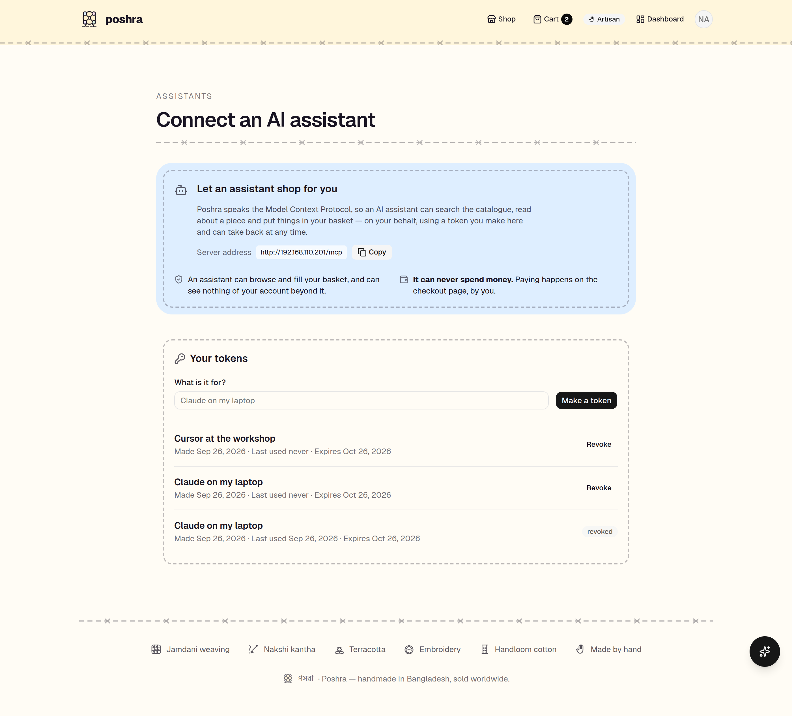
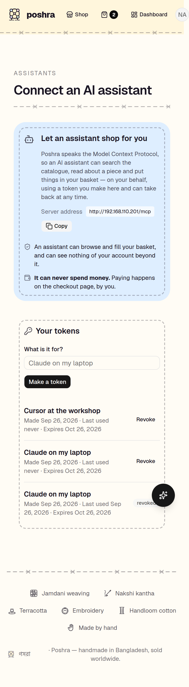

A remote MCP server: the catalogue, the crafts and the basket as tools any agent discovers at runtime. The shopper mints a token, and takes it back whenever they like.
→ the agent asks what this shop can do tools/list search_products list_crafts get_product readOnly view_cart add_to_cart prepare_checkout needs a shopper → and then does some shopping tools/call add_to_cart { "slug": "jute-floor-mat-indigo-stripe", "quantity": 2 } "added": "Jute floor mat, indigo stripe" "total_minor": 860000 // ৳8,600 tools/call prepare_checkout {} "checkout_url": "http://192.168.110.201/checkout" "charged": false ← it fills a basket. it never spends a taka. → the shopper revokes the token tools/call view_cart {} "isError": true This token has been revoked. The shopper can create a new one.

